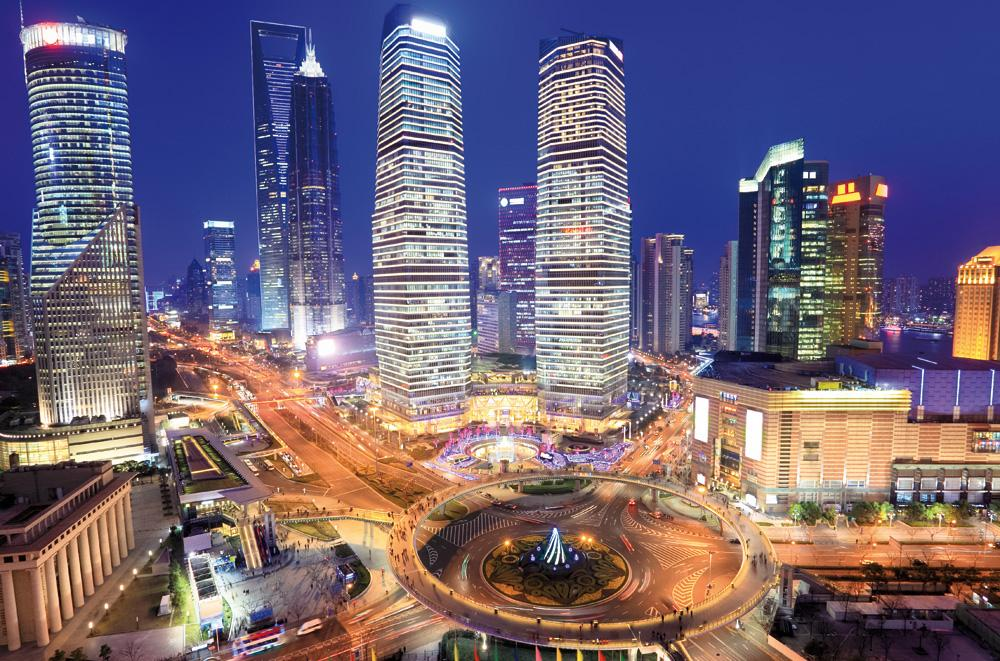

1. Koji je glavni grad Avganistana?

2. Koji je glavni grad Belgije?
3. Koji je najvisi vrh Afrike?
4. Ognjena zemlja se nalazi u:

5. Koja rijeka protice kroz Pariz?
6. Ovo je zastava koje drzave?

7. Rijeka Jangcekjang se nalazi u:
8. Koja drzava ima najvise stanovnika u Evropi?

9. Na kojoj rijeci se nalazi Grand kanjon?

10. Koji je najveci zivi vulkan u Evropi?
11. Najduza rijeka na svijetu je:
12. Koji je najvece jezero na svijetu?
13. Koji je glavni grad Australije?

14. Najmanja drzava na svijetu je:
15. Kako se zove poluostrvo na kom se nalazi Danska?
16. Drugi naziv za Sri Lanku je:
17. Labrador je poluostrvo:
18. Koja drzava ima najvise stanovnika na svijetu?

19. Raspadom SSSR-a nastalo je:

20. Grenland pripada:
21. Gdje je sjediste Evropske Unije?
22. Gdje se nalazi pustinja Gobi?
23. Koje je najdublje jezero na svijetu?
24. Dravni grad Inka Macu Pikcu se nalazi u:
25. Poluostrvo Jukatan se nalazi u:

Isteklo vam je vrijeme!
Kraj!